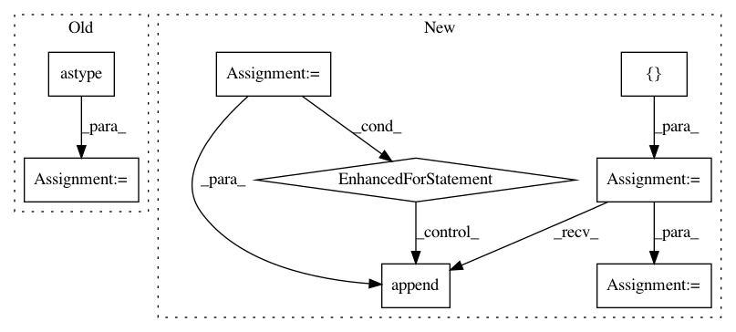

b5034279b48ae96ffdd4714f96e0f62b0f4807fc,category_encoders/ordinal.py,OrdinalEncoder,ordinal_encoding,#Any#Any#Any#Any#Any#,239
Before Change
transformed_column = X[column].map(lambda x: categories_dict.get(x, np.nan))
try:
transformed_column = transformed_column.astype(int)
except ValueError as e:
transformed_column = transformed_column.astype(float)
if impute_missing:
After Change
else:
categories = [x for x in pd.unique(X[col].values) if x is not None]
index = []
values = []
for i in range(len(categories)):
index.append(categories[i])
values.append(i + 1)
mapping = pd.Series(data=values, index=index)
mapping_out.append({"col": col, "mapping": mapping, "data_type": X[col].dtype}, )
return X, mapping_out
In pattern: SUPERPATTERN
Frequency: 4
Non-data size: 8
Instances
Project Name: scikit-learn-contrib/categorical-encoding
Commit Name: b5034279b48ae96ffdd4714f96e0f62b0f4807fc
Time: 2018-10-26
Author: jcastaldo08@gmail.com
File Name: category_encoders/ordinal.py
Class Name: OrdinalEncoder
Method Name: ordinal_encoding
Project Name: keras-team/autokeras
Commit Name: f4503bb3a3be014b452f54d8e2d187bb6419f627
Time: 2018-08-01
Author: jhfjhfj1@gmail.com
File Name: autokeras/classifier.py
Class Name: ImageClassifier
Method Name: predict
Project Name: metagenome-atlas/atlas
Commit Name: 3ab0e54a3ce88c7018a34192461dd47e5867d357
Time: 2017-01-28
Author: joe.brown@pnnl.gov
File Name: atlas/tables.py
Class Name:
Method Name: col_split